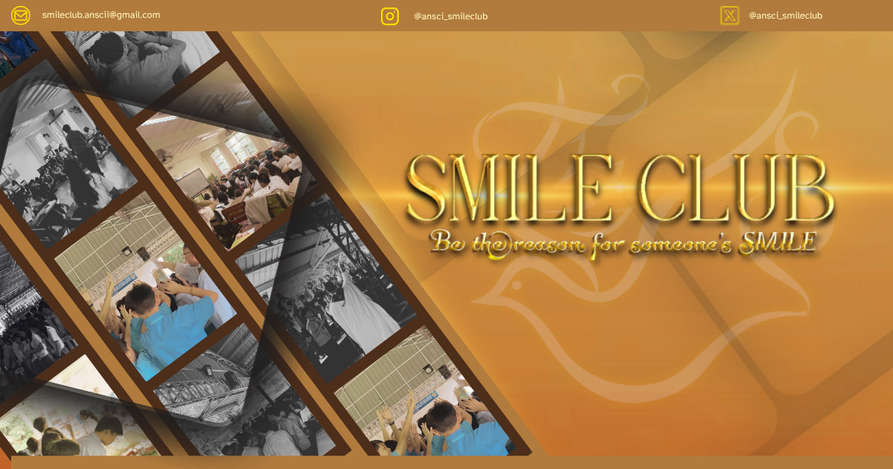

🌟 𝗔 𝗡𝗲𝘄 𝗙𝗮𝗰𝗲 𝘄𝗵𝗲𝗿𝗲 𝗠𝗶𝗿𝗮𝗰𝗹𝗲𝘀 𝗦𝗵𝗶𝗻𝗲! 🌟
With hearts full of hope and eyes set on greatness, we proudly unveil and introduce the newly designed logo of SMILE Club this S.Y. 2025 - 2026.
This new face carries a deep symbolism. The shadowed figures in the background represent every one of us, who are young, bright, and full of limitless capabilities. The soaring dove reflects our boundless potential, rising high on the wings of courage, truth, and unshakable faith. Meanwhile, the golden laurels, symbolize a crown, representing our pursuit of excellence, not just in academics, but also in character, compassion, and service to others.
This logo isn’t just a design, rather it's a bold reminder that with faith, hard work, and a heart open to wonder, miracles truly happen every day.
Rooted in our guiding motto, “See Miracles in Life Everyday,” we are challenged to look deeper, shine brighter, and live with purpose whether inside or outside the school.
📖 “𝘓𝘦𝘵 𝘺𝘰𝘶𝘳 𝘭𝘪𝘨𝘩𝘵 𝘴𝘩𝘪𝘯𝘦 𝘣𝘦𝘧𝘰𝘳𝘦 𝘰𝘵𝘩𝘦𝘳𝘴, 𝘵𝘩𝘢𝘵 𝘵𝘩𝘦𝘺 𝘮𝘢𝘺 𝘴𝘦𝘦 𝘺𝘰𝘶𝘳 𝘨𝘰𝘰𝘥 𝘥𝘦𝘦𝘥𝘴 𝘢𝘯𝘥 𝘨𝘭𝘰𝘳𝘪𝘧𝘺 𝘺𝘰𝘶𝘳 𝘍𝘢𝘵𝘩𝘦𝘳 𝘪𝘯 𝘩𝘦𝘢𝘷𝘦𝘯.” — 𝘔𝘢𝘵𝘵𝘩𝘦𝘸 5:16
So, are you ready to become the miracle the world is waiting to see, and the reason of someone's smile? Together, we'll inspire, lead, and shine! ✨
#SeeMiraclesInLifeEveryday
#SMILECLUB
#ACNSTHS_SMILEClub
✍️: Karren B. Morales (Protocol Officer)
🎨: Nhielle Everiel L. Layaban (Treasurer)
Back